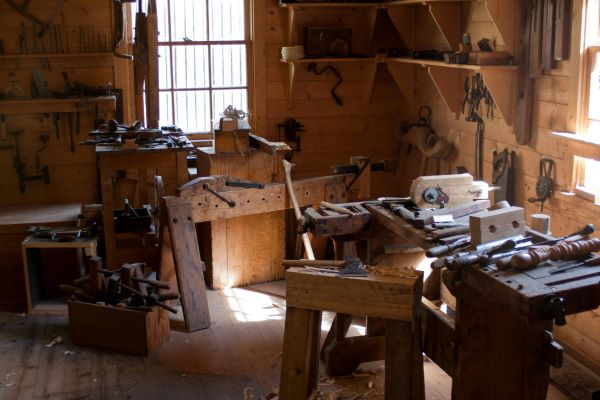

Projetcs
Why I'm Doing This
I decided to do this because this is what caust my interest being able to create design and maybe even sell my crafts I think is amazing and an opportunity to have to be able to have fun while crafting and learning both at the same time, I also thought of this when I was small I really liked wood working crafts being able to craft whatever I think of. from fun little swords to being able to make benches, doors, stairs even your own house if you really wanted to. I just wanted to have an opportunity to let other expeirence what i do and give other the opportunity to have this time to themselves.
WoodWork Saftey Tips
1. Wear Personal Protective Equipment (PPE)
2. Use Push Sticks and Safety Blocks
3. Dress Appropriately for the Shop
4. Keep the Shop Clean and Organized
5. Use Sharp, Maintained Tools
6. Maintain Focus and Stay Mindful
7. Use Proper Technique and Never Force Tools
What we value
- Caftmanship & Quality —Prioritize refined skills, such as precise joinery and superior finishing techniques, which allow for higher pricing.
- Design & Functionality —Create items that blend aesthetics with utility, such as custom cabinets, functional furniture, or popular, smaller items like charcuterie boards.
- Material Selection — Use quality, well-chosen materials, and consider the aesthetic impact of grain, color, and texture in the final piece.
- Something —
What We Like To See
- Show Creativity
- Having Plans
- Taking Action
- Making Projects
About Hawaii Wood Works
- Designing your vision the way you want and better.
- if you want to be in a creative mindset and think about what you want to make next.
- And it's a really nice resting spot to spend time or meet new people that have same interest as you.

Learn more